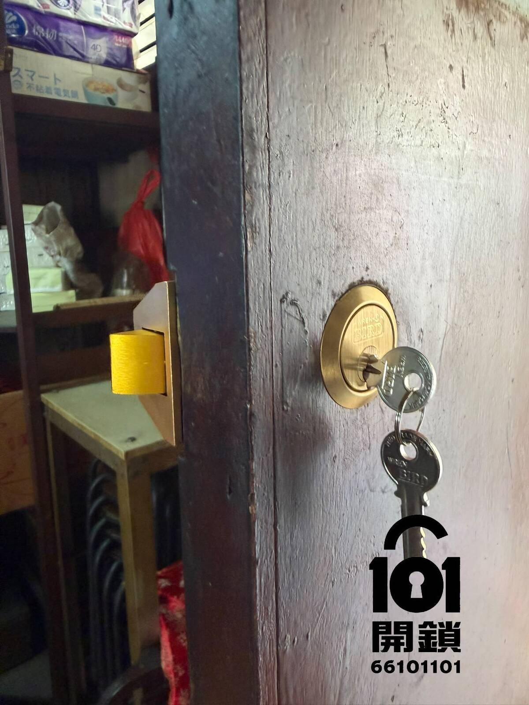
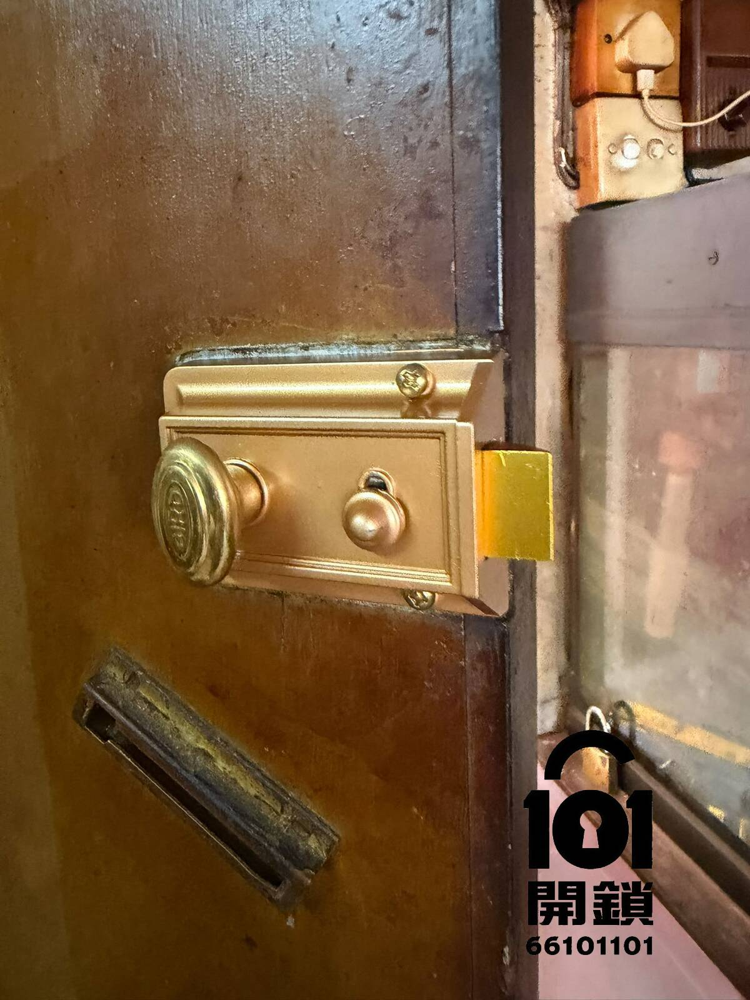
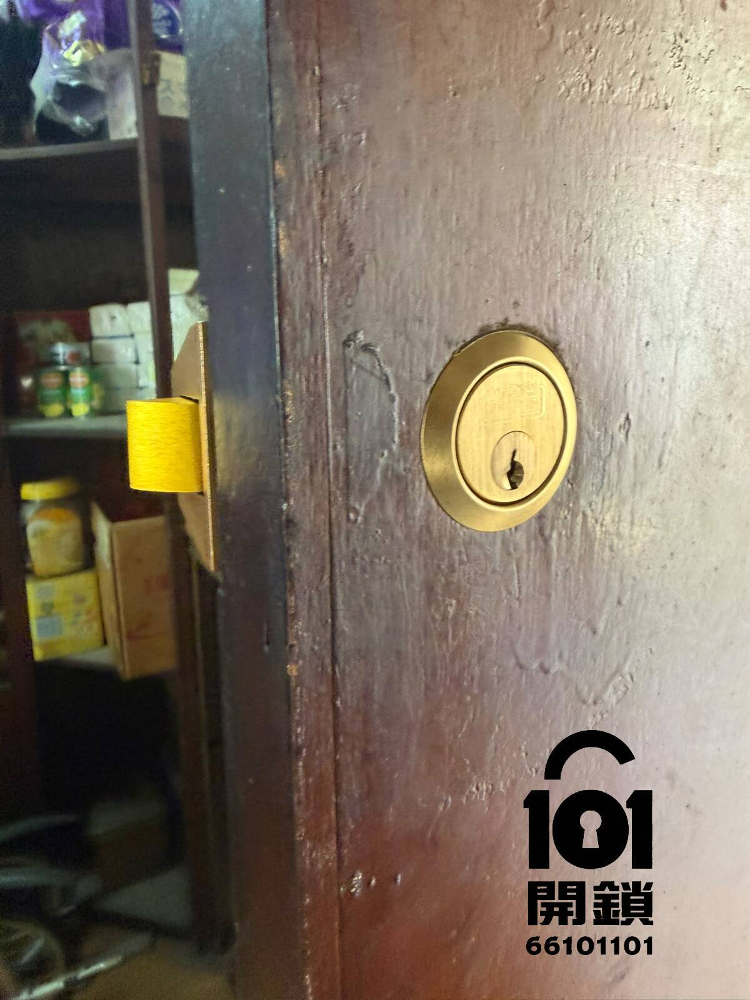

真實案例・沙田區大圍・住宅木門
大圍換鎖｜用了多年的木門三開鎖愈來愈不順
10月29日，大圍一位住戶聯絡我哋。屋企木門上的三開鎖用了多年，最近開門、上鎖都愈來愈不順。鎖匙仍然扭得到，但客人擔心有一日突然卡死，所以趁門鎖仍可使用，先安排師傅上門檢查。

門鎖未完全壞，點解仍然要處理？
客人每日都要使用這道木門。雖然原有門鎖尚未失靈，但開關手感已經和以前不同。如果一直用力扭鎖匙，問題可能繼續惡化，最後變成有鎖匙也開不到門。
客人最想知道兩件事：今次是否只需處理鎖膽，以及換鎖會否影響原有木門。這類情況不能單靠「鎖匙難扭」判斷，仍要先看門鎖實際狀態。
- 地區及日期
- 大圍｜沙田區
2026年10月29日 - 門鎖情況
- 住宅木門三開鎖老化，操作不順
- 處理方式
- 重新固定鎖膽，安裝新99鎖
到場檢查後，先固定鎖膽，再換上99鎖
師傅到場了解日常使用情況，再檢查原有三開鎖的運作。確認門鎖已有老化後，這次工程分成兩部分：先重新固定鎖膽，再安裝新99鎖。
處理時以改善門鎖操作不順為主，同時盡量保留原有木門結構。安裝完成後，再檢查新鎖是否可以正常開門及上鎖。


完成後，客人自己再試一次
安裝完成後，師傅即場測試開門、關門和上鎖，再交由客人親自試用。原本操作不順的情況已改善，新99鎖使用暢順。
木門換鎖膽，還是換整套門鎖？
如果鎖體本身正常，只是搬屋、租客退租或擔心舊匙外流，而門鎖結構又容許獨立更換，通常可以考慮只換鎖膽。相反，如果鎖體內部已磨損、鎖舌操作不順或整套鎖具老化，只換鎖膽未必能解決問題。
今次大圍換鎖個案：問題涉及門鎖老化，因此除了重新固定鎖膽，亦安裝了新99鎖。
大圍木門換鎖價錢點樣計？
換鎖價錢會按鎖具種類、更換範圍、原有鎖膽及鎖體狀態、配件規格和上門時間而定。查詢時可以先拍下門鎖正面、側面和鎖舌位置，再說明門鎖目前的問題，方便初步判斷所需工程。
如果木門三開鎖開始愈來愈難扭，不要長期用力操作。木門受潮、門鉸鬆動或門身下墜，都可能影響鎖舌和門框鎖口的對位，問題未必只在鎖膽。